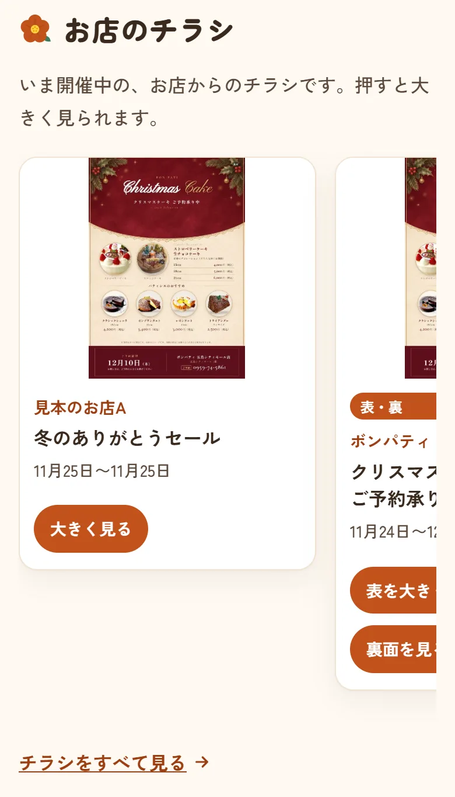

全体の流れ
- 1お店の方が、スマホでチラシを送るできあがったチラシの画像かPDFを選んで「送る」
- 2運営のご担当者が、中身を見て「載せる」お知らせのメールが届きます
- 3ホームページの「お店のチラシ」に出る載せる期間が過ぎると、自動で消えます
お店の方へ
チラシを送る（4つの手順）
運営からもらった、お店ごとの専用のアドレス（QRコード）を開きます。お店の名前が入った画面が出ます。
見出しを入れる
チラシの題を、1〜30字で入れます（空いていると送れません）。
お店の名前が自分のお店か、確かめてください。

載せる期間を選ぶ
開始の日と終了の日を選びます。
終了は、今日から60日以内。終了の日まで載って、次の日に消えます。
チラシの画像を選ぶ
表の画像（またはPDF）を選びます。裏があれば、裏の画像も選びます。
表は JPEG・PNG・PDF、裏は JPEG・PNG で、どれも1つ8MBまでです。表をPDFにした時は、裏は付けられません。
「送る」を押す
「受け付けました」と出たら完了です。
運営の確認のあとに、ホームページに載ります。
送る前に、4つ確かめてください
- 顔・名前・名札などで人が分かる時は、その人からホームページに載せる了承をもらっている
- 値段・日付・電話番号が合っている
- 写真・イラスト・キャラクター・ロゴは、お店で作った物か、載せてよいと許可をもらった物
- 文字が小さすぎない（スマホで見られます）
送れるのは、1つのお店で1日5件まで。まったく同じ物をもう一度送ると断られます。直した物は、新しく送れば別の受付になります。
運営のご担当者へ
確かめて「載せる」（4つの手順）
- 届く：お知らせのメールが来ます。
- 確かめる：一覧表で、お店・見出し・ファイル・載せる期間を見ます。
- 載せる：「載せる」の列で「載せる」を選びます。選ぶだけで保存されます。
- 見え方を確かめる：1分ほど待ってから、ホームページの「お店のチラシ」欄を開き直して、出ているか見ます。載せ始めの日より前と、8件の枠がいっぱいの時は、まだ出ません（下の「こんな時は」）。
- まちがえた時：「載せない」に変えると、1分ほどでホームページから消えます。迷った時は、ひなが堂へ一言ください。
お知らせのメールを開く
件名「（お店の名前）からチラシが届きました（見出し）」のメールを開きます。本文に、お店・見出し・載せる期間・受付日時・一覧表の行（例：7行目）が書いてあります。
リンクを押して、届いた行を開く
本文のいちばん下のリンクを押すと、受付の一覧表（Google スプレッドシート）の「チラシ」のタブが、届いた行を選んだ状態で開きます。
左端の行番号が、メールの「一覧表の行」と同じか確かめます。一覧表は横に長い表です。右へ動かしても、同じ行番号の所で確かめてください。
載せる期間を確かめる
「載せ始め」と「載せ終わり」の日を確かめます。直したい時は、ここで書き換えられます。
中身を見て、「載せる」を選ぶ
「ファイル」を押して、メールのお店のチラシか、見出しが合っているかを確かめてから、「載せる」の列で「載せる」を選びます。選ぶだけで保存されます。
裏がある時は、一番右の「裏のファイル」も押して見ます。途中でやめる時は「載せない」に。載せ終わりの次の日には、何もしなくても自動で消えます。
「載せる」にした物のうち、載せる期間の中で、載せ始めが新しい8件までがホームページに出ます（下の「こんな時は」もご覧ください）。
一覧表の約束
書き換えるのは、緑の4列（載せ始め・載せ終わり・載せる・運営のメモ）だけです。ほかの列は仕組みが使うので、書き換えないでください（本番の一覧表では、ほかの列は書き換えられない設定にします）。
こんな時は
- 載せる物が8件を超えた
- 載せる期間の中の物のうち、載せ始めの新しい8件が出ます。あふれた分は「運営のメモ」の列に「枠（8件）が埋まっているため、まだ載っていません」と出ます。枠が空いた時に、載せる期間の中で、新しい方から8件に入っていれば出ます。
- 載せたくない
- 「載せない」を選ぶか、空いたままにします。お店へは御社からお伝えください。
- お店が直した物を送ってきた
- 新しい行で届きます。古い行を「載せない」にしてから、新しい行を「載せる」にします。
- まちがって送られた物がある
- 「載せない」にして、ひなが堂へ一言ください。
お二人とも
ホームページでの見え方
トップと「お知らせ・イベント」のページに並びます。押すと大きく見られ、裏がある時は「裏面を見る」が出ます。載っているチラシがない時は、欄ごと隠れます。

（今回だけ）お試しのお願い
1台のスマホで、送る → 「載せる」 → ホームページに出るまで、続けて試せます。見本は、そのスマホの中だけで動き、どこにも送られません。
- 1お店の画面（見本）で送る見出しを入れ、手元の写真かチラシの画像を選んで「送る」
- 2運営の表（見本）で「載せる」「受け付けました」の下のボタンから開けます
- 3「ホームページで見る」を押すお店のチラシ欄の先頭に出ています（「載せない」に戻すと消えます）
見ていただきたい所
- お店の方が、説明なしで送れそうか
- 同時に載るのは8件まで、で足りるか
- 載せ終わりは60日以内、でよいか
- 「載せる」を選ぶご担当者はどなたにするか（お知らせのメールの送り先）